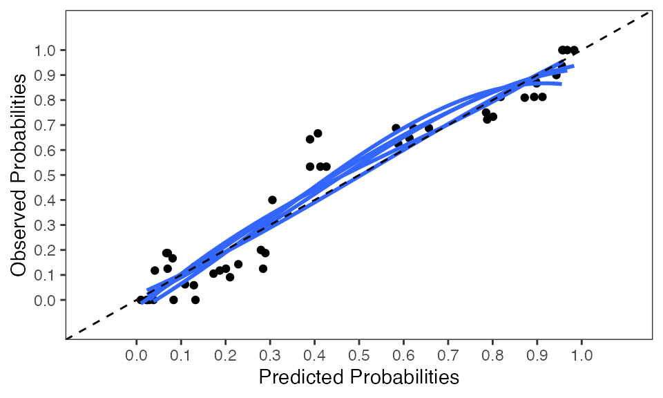
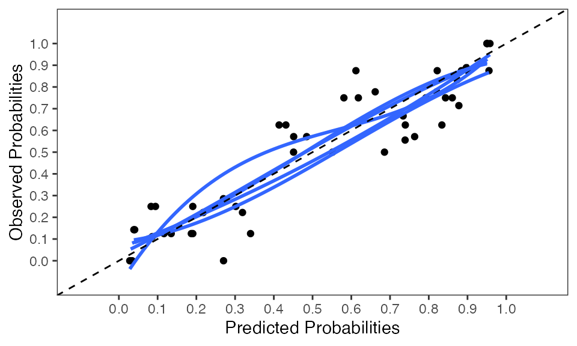

vignettes/development_workflow.Rmd
development_workflow.RmdThis vignette shows how to develop, internally and externally validate a (logistic) regression prediction model with mice and psfmi.
You can install the released version of psfmi with:
install.packages("psfmi")And the development version from GitHub with:
# install.packages("devtools")
devtools::install_github("mwheymans/psfmi")You can install the released version of mice with:
install.packages("mice")Back to Steps
I generated 5 imputed datasets to handle the missing values in the lbp_orig dataset that is included in the psfmi package. Depending on the amount of missing data, the number of imputed datasets may be increased (see on-line book: Applied Missing Data analysis).
imp <- mice(lbp_orig, m=5, maxit=10, seed = 750) ##
## iter imp variable
## 1 1 Carrying Pain Tampascale Function Radiation Age Satisfaction JobControl JobDemands SocialSupport
## 1 2 Carrying Pain Tampascale Function Radiation Age Satisfaction JobControl JobDemands SocialSupport
## 1 3 Carrying Pain Tampascale Function Radiation Age Satisfaction JobControl JobDemands SocialSupport
## 1 4 Carrying Pain Tampascale Function Radiation Age Satisfaction JobControl JobDemands SocialSupport
## 1 5 Carrying Pain Tampascale Function Radiation Age Satisfaction JobControl JobDemands SocialSupport
## 2 1 Carrying Pain Tampascale Function Radiation Age Satisfaction JobControl JobDemands SocialSupport
## 2 2 Carrying Pain Tampascale Function Radiation Age Satisfaction JobControl JobDemands SocialSupport
## 2 3 Carrying Pain Tampascale Function Radiation Age Satisfaction JobControl JobDemands SocialSupport
## 2 4 Carrying Pain Tampascale Function Radiation Age Satisfaction JobControl JobDemands SocialSupport
## 2 5 Carrying Pain Tampascale Function Radiation Age Satisfaction JobControl JobDemands SocialSupport
## 3 1 Carrying Pain Tampascale Function Radiation Age Satisfaction JobControl JobDemands SocialSupport
## 3 2 Carrying Pain Tampascale Function Radiation Age Satisfaction JobControl JobDemands SocialSupport
## 3 3 Carrying Pain Tampascale Function Radiation Age Satisfaction JobControl JobDemands SocialSupport
## 3 4 Carrying Pain Tampascale Function Radiation Age Satisfaction JobControl JobDemands SocialSupport
## 3 5 Carrying Pain Tampascale Function Radiation Age Satisfaction JobControl JobDemands SocialSupport
## 4 1 Carrying Pain Tampascale Function Radiation Age Satisfaction JobControl JobDemands SocialSupport
## 4 2 Carrying Pain Tampascale Function Radiation Age Satisfaction JobControl JobDemands SocialSupport
## 4 3 Carrying Pain Tampascale Function Radiation Age Satisfaction JobControl JobDemands SocialSupport
## 4 4 Carrying Pain Tampascale Function Radiation Age Satisfaction JobControl JobDemands SocialSupport
## 4 5 Carrying Pain Tampascale Function Radiation Age Satisfaction JobControl JobDemands SocialSupport
## 5 1 Carrying Pain Tampascale Function Radiation Age Satisfaction JobControl JobDemands SocialSupport
## 5 2 Carrying Pain Tampascale Function Radiation Age Satisfaction JobControl JobDemands SocialSupport
## 5 3 Carrying Pain Tampascale Function Radiation Age Satisfaction JobControl JobDemands SocialSupport
## 5 4 Carrying Pain Tampascale Function Radiation Age Satisfaction JobControl JobDemands SocialSupport
## 5 5 Carrying Pain Tampascale Function Radiation Age Satisfaction JobControl JobDemands SocialSupport
## 6 1 Carrying Pain Tampascale Function Radiation Age Satisfaction JobControl JobDemands SocialSupport
## 6 2 Carrying Pain Tampascale Function Radiation Age Satisfaction JobControl JobDemands SocialSupport
## 6 3 Carrying Pain Tampascale Function Radiation Age Satisfaction JobControl JobDemands SocialSupport
## 6 4 Carrying Pain Tampascale Function Radiation Age Satisfaction JobControl JobDemands SocialSupport
## 6 5 Carrying Pain Tampascale Function Radiation Age Satisfaction JobControl JobDemands SocialSupport
## 7 1 Carrying Pain Tampascale Function Radiation Age Satisfaction JobControl JobDemands SocialSupport
## 7 2 Carrying Pain Tampascale Function Radiation Age Satisfaction JobControl JobDemands SocialSupport
## 7 3 Carrying Pain Tampascale Function Radiation Age Satisfaction JobControl JobDemands SocialSupport
## 7 4 Carrying Pain Tampascale Function Radiation Age Satisfaction JobControl JobDemands SocialSupport
## 7 5 Carrying Pain Tampascale Function Radiation Age Satisfaction JobControl JobDemands SocialSupport
## 8 1 Carrying Pain Tampascale Function Radiation Age Satisfaction JobControl JobDemands SocialSupport
## 8 2 Carrying Pain Tampascale Function Radiation Age Satisfaction JobControl JobDemands SocialSupport
## 8 3 Carrying Pain Tampascale Function Radiation Age Satisfaction JobControl JobDemands SocialSupport
## 8 4 Carrying Pain Tampascale Function Radiation Age Satisfaction JobControl JobDemands SocialSupport
## 8 5 Carrying Pain Tampascale Function Radiation Age Satisfaction JobControl JobDemands SocialSupport
## 9 1 Carrying Pain Tampascale Function Radiation Age Satisfaction JobControl JobDemands SocialSupport
## 9 2 Carrying Pain Tampascale Function Radiation Age Satisfaction JobControl JobDemands SocialSupport
## 9 3 Carrying Pain Tampascale Function Radiation Age Satisfaction JobControl JobDemands SocialSupport
## 9 4 Carrying Pain Tampascale Function Radiation Age Satisfaction JobControl JobDemands SocialSupport
## 9 5 Carrying Pain Tampascale Function Radiation Age Satisfaction JobControl JobDemands SocialSupport
## 10 1 Carrying Pain Tampascale Function Radiation Age Satisfaction JobControl JobDemands SocialSupport
## 10 2 Carrying Pain Tampascale Function Radiation Age Satisfaction JobControl JobDemands SocialSupport
## 10 3 Carrying Pain Tampascale Function Radiation Age Satisfaction JobControl JobDemands SocialSupport
## 10 4 Carrying Pain Tampascale Function Radiation Age Satisfaction JobControl JobDemands SocialSupport
## 10 5 Carrying Pain Tampascale Function Radiation Age Satisfaction JobControl JobDemands SocialSupportUse the complete function of the mice package to extract the completed datasets. By setting action = "long" and include = FALSE, the imputed datasets are stacked under each other to form one long dataset and the original dataset (that included missing values) is not included in that long dataset.
data_comp <- complete(imp, action = "long", include = FALSE)Back to Steps
Use the psfmi_lr function in the psfmi package to perform backward selection over the 5 multiply imputed datasets with a p-value of 0.05 and as selection method D1.
Note that with this function it is possible to include cubic spline coefficients in case of non-linear relationships during backward selection and that predictors may be forced in the model during backward selection by including them at the setting keep.predictors. When the setting direction is changed to FW, forward selection is done.
pool_lr <- psfmi_lr(data=data_comp, nimp=5, impvar=".imp", Outcome="Chronic",
predictors=c("Gender", "Age", "JobControl", "Tampascale", "Pain", "Radiation",
"JobDemands", "SocialSupport", "Smoking"), cat.predictors = c("Satisfaction", "Carrying"),
spline.predictors = "Function", nknots = 3,
keep.predictors = "Radiation", p.crit = 0.157, method="D1", direction = "BW")## Removed at Step 1 is - Gender## Removed at Step 2 is - JobDemands## Removed at Step 3 is - Smoking## Removed at Step 4 is - Age## Removed at Step 5 is - Tampascale## Removed at Step 6 is - rcs(Function,3)## Removed at Step 7 is - JobControl## Removed at Step 8 is - SocialSupport##
## Selection correctly terminated,
## No more variables removed from the model
pool_lr$RR_model_final## $`Step 9`
## term estimate std.error statistic df p.value
## 1 (Intercept) -5.6290593 1.1754061 -4.7890336 39.95530 2.318419e-05
## 2 Pain 0.9354091 0.1851492 5.0521901 67.68397 3.532584e-06
## 3 Radiation 0.5186631 0.5151459 1.0068276 91.48901 3.166731e-01
## 4 factor(Satisfaction)2 -0.4282950 0.6531511 -0.6557364 44.49919 5.153699e-01
## 5 factor(Satisfaction)3 -2.6431297 0.9429219 -2.8031270 26.83928 9.283867e-03
## 6 factor(Carrying)2 1.2554087 0.6254666 2.0071556 78.40085 4.817958e-02
## 7 factor(Carrying)3 1.6871723 0.6473849 2.6061349 115.47451 1.036350e-02
## OR lower.EXP upper.EXP
## 1 0.003591953 0.0003338808 0.0386429
## 2 2.548255652 1.7610642412 3.6873197
## 3 1.679780430 0.6037849102 4.6732905
## 4 0.651619185 0.1747816872 2.4293596
## 5 0.071138280 0.0102714430 0.4926917
## 6 3.509272384 1.0103539396 12.1887907
## 7 5.404177760 1.4991278521 19.4814186
pool_lr$multiparm_final## $`Step 9`
## p-values D1 F-statistic
## Pain 1.275830e-06 25.524625
## Radiation 3.148421e-01 1.013702
## factor(Satisfaction) 2.426042e-02 4.267156
## factor(Carrying) 3.261509e-02 3.483376The same result can be obtained by using the formula setting in the psfmi_lr function
pool_lr <- psfmi_lr(data=data_comp, nimp=5, impvar=".imp",
formula = Chronic ~ Gender + Age + JobControl + Tampascale + Pain + Radiation +
JobDemands + SocialSupport + Smoking + factor(Satisfaction) + factor(Carrying) +
rcs(Function, 3), keep.predictors = "Radiation",
p.crit = 0.157, method="D1", direction = "BW")## Removed at Step 1 is - Gender## Removed at Step 2 is - JobDemands## Removed at Step 3 is - Smoking## Removed at Step 4 is - Age## Removed at Step 5 is - Tampascale## Removed at Step 6 is - rcs(Function,3)## Removed at Step 7 is - JobControl## Removed at Step 8 is - SocialSupport##
## Selection correctly terminated,
## No more variables removed from the model
pool_lr$RR_model_final## $`Step 9`
## term estimate std.error statistic df p.value
## 1 (Intercept) -5.6290593 1.1754061 -4.7890336 39.95530 2.318419e-05
## 2 Pain 0.9354091 0.1851492 5.0521901 67.68397 3.532584e-06
## 3 Radiation 0.5186631 0.5151459 1.0068276 91.48901 3.166731e-01
## 4 factor(Satisfaction)2 -0.4282950 0.6531511 -0.6557364 44.49919 5.153699e-01
## 5 factor(Satisfaction)3 -2.6431297 0.9429219 -2.8031270 26.83928 9.283867e-03
## 6 factor(Carrying)2 1.2554087 0.6254666 2.0071556 78.40085 4.817958e-02
## 7 factor(Carrying)3 1.6871723 0.6473849 2.6061349 115.47451 1.036350e-02
## OR lower.EXP upper.EXP
## 1 0.003591953 0.0003338808 0.0386429
## 2 2.548255652 1.7610642412 3.6873197
## 3 1.679780430 0.6037849102 4.6732905
## 4 0.651619185 0.1747816872 2.4293596
## 5 0.071138280 0.0102714430 0.4926917
## 6 3.509272384 1.0103539396 12.1887907
## 7 5.404177760 1.4991278521 19.4814186
pool_lr$multiparm_final## $`Step 9`
## p-values D1 F-statistic
## Pain 1.275830e-06 25.524625
## Radiation 3.148421e-01 1.013702
## factor(Satisfaction) 2.426042e-02 4.267156
## factor(Carrying) 3.261509e-02 3.483376Back to Steps
The performance of the model selected at step 3 can be determined by using the pool_performance function.
pool_select <- psfmi_lr(data=data_comp, nimp=5, impvar=".imp",
formula = Chronic ~ Pain + Radiation + factor(Satisfaction) + factor(Carrying),
p.crit = 1, method="D1")
perf <- pool_performance(data=data_comp, nimp=5, impvar=".imp",
Outcome = "Chronic", predictors = c("Pain", "Radiation", "factor(Satisfaction)",
"factor(Carrying)"), cal.plot=TRUE, plot.indiv=FALSE, groups_cal = 10)
perf## $ROC_pooled
## 95% Low AUC 95% Up
## AUC (logit) 0.8144 0.8978 0.9462
##
## $coef_pooled
## (Intercept) Pain Radiation
## -5.6290593 0.9354091 0.5186631
## factor(Satisfaction)2 factor(Satisfaction)3 factor(Carrying)2
## -0.4282950 -2.6431297 1.2554087
## factor(Carrying)3
## 1.6871723
##
## $R2_pooled
## [1] 0.5842591
##
## $Brier_Scaled_pooled
## [1] 0.4882759
##
## $nimp
## [1] 5To internally validate the model we use the psfmi_perform function. With this function five different methods can be used to internally validate models in MI data see these Vignettes, Three methods use cross-validation and two bootstrapping in combination with MI.
We will use cross-validation and more specific the method cv_MI_RR. With this method it is possible to integrate backward selection into the cross-validation procedure. The last model that is selected by the psfmi_lr function is internally validated. So, if we want to apply backward selection during cross-validation from the full model we first have to apply the psfmi_lr function without variable selection. That is what we apply here, because we know that variable selection is one of the main reasons that prediction models are over-fitted.
pool_val <- psfmi_lr(data=data_comp, formula = Chronic ~ Gender + Age + JobControl + Tampascale +
Pain + Radiation + JobDemands + SocialSupport + Smoking + factor(Satisfaction) +
factor(Carrying) + rcs(Function, 3), p.crit = 1, direction="BW",
nimp=5, impvar=".imp", method="D1")
set.seed(200)
res_cv <- psfmi_perform(pool_val, val_method = "cv_MI_RR", data_orig = lbp_orig, folds = 5,
p.crit=0.05, BW=TRUE, nimp_mice = 10, miceImp = miceImp, printFlag = FALSE)##
## fold 1## Removed at Step 1 is - Age## Removed at Step 2 is - Smoking## Removed at Step 3 is - Gender## Removed at Step 4 is - Tampascale## Removed at Step 5 is - JobDemands## Removed at Step 6 is - rcs(Function,3)## Removed at Step 7 is - SocialSupport## Removed at Step 8 is - JobControl## Removed at Step 9 is - Radiation## Removed at Step 10 is - factor(Carrying)##
## Selection correctly terminated,
## No more variables removed from the model##
## fold 2## Removed at Step 1 is - rcs(Function,3)## Removed at Step 2 is - Radiation## Removed at Step 3 is - Gender## Removed at Step 4 is - JobControl## Removed at Step 5 is - Age## Removed at Step 6 is - SocialSupport## Removed at Step 7 is - Smoking## Removed at Step 8 is - JobDemands## Removed at Step 9 is - Tampascale## Removed at Step 10 is - factor(Carrying)##
## Selection correctly terminated,
## No more variables removed from the model##
## fold 3## Removed at Step 1 is - Gender## Removed at Step 2 is - JobDemands## Removed at Step 3 is - Tampascale## Removed at Step 4 is - Smoking## Removed at Step 5 is - JobControl## Removed at Step 6 is - rcs(Function,3)## Removed at Step 7 is - Age## Removed at Step 8 is - SocialSupport## Removed at Step 9 is - Radiation##
## Selection correctly terminated,
## No more variables removed from the model##
## fold 4## Removed at Step 1 is - Gender## Removed at Step 2 is - Smoking## Removed at Step 3 is - JobDemands## Removed at Step 4 is - JobControl## Removed at Step 5 is - Radiation## Removed at Step 6 is - factor(Carrying)## Removed at Step 7 is - SocialSupport## Removed at Step 8 is - Age##
## Selection correctly terminated,
## No more variables removed from the model##
## fold 5## Removed at Step 1 is - JobDemands## Removed at Step 2 is - Gender## Removed at Step 3 is - Smoking## Removed at Step 4 is - Tampascale## Removed at Step 5 is - rcs(Function,3)## Removed at Step 6 is - Age## Removed at Step 7 is - Radiation## Removed at Step 8 is - SocialSupport## Removed at Step 9 is - JobControl## Removed at Step 10 is - factor(Carrying)##
## Selection correctly terminated,
## No more variables removed from the model
res_cv## $stats
## Train Test
## AUC 0.8877807 0.8467882
## Brier scaled 0.4657961 0.3374208
## Rsq 0.5622000 0.5117315
##
## $slope
## Intercept Slope
## -0.1494438 0.8449148Back to Steps
We can use the slope value of 0.8449148 that was estimated at the previous step as a shrinkage factor to prevent our model from being overfitted in new data. We do this by multiplying the pooled coefficients with the shrinkage factor and also to determine a new intercept value that is aligned with the shrunken coefficients.
We use the pool_intadj function for this that will provide the adjusted coefficients and new intercept value.
pool_select <- psfmi_lr(data=data_comp, nimp=5, impvar=".imp",
formula = Chronic ~ Pain + Radiation + factor(Satisfaction) + factor(Carrying),
p.crit = 1, method="D1")
res <- pool_intadj(pool_select, shrinkage_factor = 0.8449148)
res$int_adj## [1] -4.795145
res$coef_shrink_pooled## Pain Radiation factor(Satisfaction)2
## 0.7903410 0.4382261 -0.3618728
## factor(Satisfaction)3 factor(Carrying)2 factor(Carrying)3
## -2.2332194 1.0607134 1.4255169The last step is to externally validate this adjusted model.
Back to Steps
We validate the model in an external dataset that is imputed five times due to missing data.
res_extval <- mivalext_lr(data.val = lbpmi_extval, nimp = 5, impvar = "Impnr",
Outcome = "Chronic", predictors = pool_lr$predictors_final,
lp.orig = c(res$int_adj, res$coef_shrink_pooled),
cal.plot = TRUE)##
## Pooled performance measures over m = 5 imputed external validation datasets correctly estimated
res_extval$ROC## $`ROC (logit)`
## 95% Low AUC 95% Up
## AUC (logit) 0.7382 0.8482 0.9172
##
## $`ROC (median)`
## 1st Qu. Median 3rd Qu.
## 0.84803 0.84897 0.85366
res_extval$R2_fixed## $`Fisher Z (fixed)`
## [1] 0.45587
##
## $`Median (fixed)`
## 1st Qu. Median 3rd Qu.
## 0.46034 0.46045 0.47505
res_extval$HLtest## D p df df2
## 0.71479 0.67820 8.00000 149.55620
res_extval$LP_pooled_ext## intercept slope
## -0.01812 0.88741In the external dataset the AUC is 0.8482 and the R-squared 0.45587. The Hosmer and Lemeshow test has a p-value of 0.67820, which means that the fit is satisfactory. This is also confirmed on the calibration plot where the calibration curves in each imputed dataset are near the optimal (dashed) line. The slope (regression coefficients) has a value of 0.88741 and slightly deviates from the value of 1, which means that the coefficients values differ between the development and external dataset.
Back to Steps